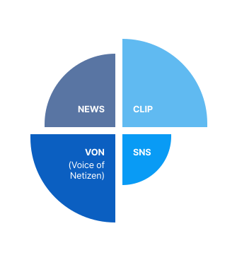

케이블tvN, Mnet, OCN, OnStyle, tvN STORY, tvN SHOW, 채널CGV, 투니버스, MBC every1, MBC 드라마넷, MBC M, MBC SPORTS+, MBC 퀸, KBS드라마, KBS W, KBS N Life, KBS joy, KBS N SPORTS, SBSfunE, SBS플러스, SBS MTV, SBS FiL, JTBC2, E채널, Kstar, iHQ, skyPetpark. FashionN, ETN, 드라맥스, SKY, NQQ, 큐브TV, 디스커버리 채널 코리아
OTT웨이브, 티빙, 왓차, 디즈니+, 넷플릭스, 쿠팡클레이, Apple TV+, 카카오TV, 카카오페이지, 지니TV 등
화제성 구성 데이터
국내 제작사의 TV와 OTT 콘텐츠와 출연자(Player)에 대한 인터넷 정보와 이에 대한 네티즌의 반응 4가 지를 조사합니다.
Online Issue Power Point
NEWS p + VON p + CLIP p + SNS p

집계 방법
화제성 점수(p)는 수집된 정보인 기사, 게시글, 동영상 클립 각각의 정보 가치(Value)와 정보 반응(Respond) 그 리고 정보 보존력(Keep)를 계산하여 해당 콘텐츠에 대한 정확한 반응을 계산 합니다.
Point of Data
V * R * K
구분
판단요소
정보가치 (V)
콘텐츠 제목의 등장 위치 (본문, 제목)
연관 키워드 등장 횟수
사진또는동영상 포함여부
문서의 길이